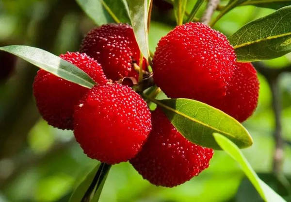

石榴（拉丁名：Punica granatum L.）落叶乔木或灌木；单叶，通常对生或簇生，无托叶。花顶生或近顶生，单生或几朵簇生或组成聚伞花序，近钟形，裂片5-9，花瓣5-9，多皱褶，覆瓦状排列；胚珠多数。浆果球形，顶端有宿存花萼裂片，果皮厚；种子多数，浆果近球形，果熟期9-10月。外种皮肉质半透明，多汁；内种皮革质。 性味甘、酸涩、温，具有杀虫、收敛、涩肠、止痢等功效。石榴果实营养丰富，维生素C含量比苹果、梨要高出一二倍。 中国栽培石榴的历史，可上溯至汉代，据陆巩记载是张骞从西域引入。中国南北都有栽培，以安徽、江苏、河南等地种植面积较大，并培育出一些较优质的品种。其中安徽怀远县是中国石榴之乡，“怀远石榴”为国家地理标志保护产品。 中国传统文化视石榴为吉祥物，视它为多子多福的象征。

